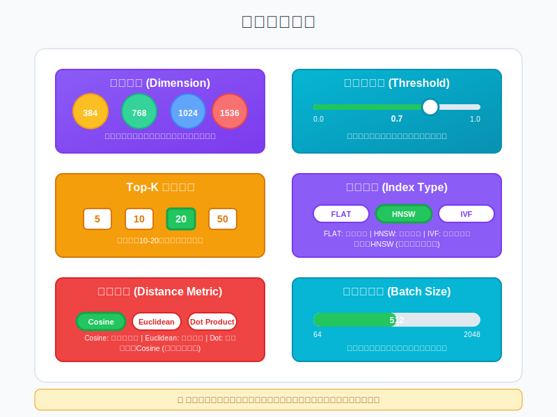

索引参数配置
索引参数配置是RAG系统性能优化的关键环节，合理的参数设置可以显著提高检索效率、准确性和系统整体性能。本页面详细介绍各类索引的关键参数及其调优建议。

向量索引参数
向量索引的参数配置直接影响检索的效率和准确性，主要包括索引算法参数和向量相似度参数。
HNSW算法参数
HNSW (Hierarchical Navigable Small World) 是目前最常用的向量索引算法之一，其关键参数包括：
| 参数 | 描述 | 建议值 | 影响 |
|---|---|---|---|
| M | 每个节点的最大出边数 | 12-64 | 值越大，构建越慢，内存消耗越大，但查询越准确 |
| ef_construction | 构建时的候选集大小 | 100-500 | 值越大，构建越慢，但索引质量越高 |
| ef_search | 搜索时的候选集大小 | 50-200 | 值越大，搜索越慢，但结果越准确 |
| num_layers | 层数 | 自动计算或4-12 | 层数越多，适合处理更大规模的数据 |
HNSW参数调优建议
- 数据规模小（<10万）：M=16, ef_construction=200, ef_search=50
- 数据规模中（10万-100万）：M=32, ef_construction=300, ef_search=100
- 数据规模大（>100万）：M=64, ef_construction=500, ef_search=200
- 实时性要求高：降低ef_search，牺牲部分准确性换取速度
- 准确性要求高：提高ef_search和M，牺牲部分速度换取准确性
IVF算法参数
IVF (Inverted File Index) 是另一种常用的向量索引算法，其关键参数包括：
| 参数 | 描述 | 建议值 | 影响 |
|---|---|---|---|
| nlist | 聚类中心数量 | 4*sqrt(N)到16*sqrt(N) | 值越大，构建越慢，内存消耗越大，但查询可能更准确 |
| nprobe | 搜索时检查的聚类数量 | 1-256 | 值越大，搜索越慢，但结果越准确 |
IVF参数调优建议
- nlist设置：通常设置为数据量N的平方根的4-16倍，如10万数据可设置为1000-4000
- nprobe设置：通常从nlist的1%开始，根据需要增加，如nlist=1000，可从nprobe=10开始调整
- 平衡点：nprobe约为nlist的10%时，通常能达到较好的速度/准确性平衡
PQ算法参数
PQ (Product Quantization) 是一种用于压缩向量的技术，常与IVF结合使用，其关键参数包括：
| 参数 | 描述 | 建议值 | 影响 |
|---|---|---|---|
| m | 子向量数量 | 1-256 | 值越大，压缩率越高，但精度损失可能更大 |
| nbits | 每个子向量的位数 | 8（常用） | 值越大，压缩率越低，但精度越高 |
PQ参数调优建议
- m设置：通常设置为向量维度的1/4到1/8，如768维向量可设置m=96或m=64
- 压缩率与精度平衡：m越大，压缩率越高，但精度损失也越大
- 与IVF结合：IVF-PQ中，先调整IVF参数，再调整PQ参数
向量相似度参数
向量相似度计算方法和参数也会影响检索结果：
| 参数 | 描述 | 选项 | 适用场景 |
|---|---|---|---|
| 距离度量 | 向量间距离计算方法 | 欧氏距离、余弦相似度、内积、汉明距离 | 根据嵌入模型选择合适的距离度量 |
| top_k | 返回的最相似结果数量 | 3-100 | 根据应用需求和后处理逻辑调整 |
| 相似度阈值 | 结果筛选的相似度阈值 | 0.5-0.9 | 根据数据特点和准确性要求调整 |
相似度参数调优建议
- 距离度量选择：
- OpenAI嵌入模型：余弦相似度
- BERT类模型：欧氏距离或余弦相似度
- 归一化向量：内积（计算更快）
- top_k设置：
- 简单问答：3-5
- 复杂问题：10-20
- 探索性查询：20-50
- 相似度阈值：从0.7开始，根据结果质量调整
关键词索引参数
关键词索引的参数配置影响检索的精确性和召回率，主要包括BM25算法参数和关键词提取参数。
BM25算法参数
BM25是关键词索引中常用的排序算法，其关键参数包括：
| 参数 | 描述 | 建议值 | 影响 |
|---|---|---|---|
| k1 | 词频饱和参数 | 1.2-2.0 | 控制词频对得分的影响程度 |
| b | 文档长度归一化参数 | 0.75-0.9 | 控制文档长度对得分的影响程度 |
| epsilon | 平滑参数 | 0.25 | 防止除零错误，影响稀有词的权重 |
BM25参数调优建议
- k1调整：
- 较小的k1（0.5-1.5）：适合短文本，词频影响较小
- 较大的k1（1.5-2.5）：适合长文本，词频影响较大
- b调整：
- 较小的b（0.5-0.7）：文档长度影响较小，适合长度差异大的文档集
- 较大的b（0.7-1.0）：文档长度影响较大，适合长度相近的文档集
- 常用组合：
- 通用设置：k1=1.2, b=0.75
- 长文本：k1=2.0, b=0.8
- 短文本：k1=1.0, b=0.6
关键词提取参数
关键词提取的参数影响索引的质量和检索效果：
| 参数 | 描述 | 建议值 | 影响 |
|---|---|---|---|
| 分词方法 | 文本分词的算法 | 根据语言选择合适的分词器 | 影响关键词的识别和匹配 |
| 停用词列表 | 需要过滤的常见词 | 根据领域定制 | 减少无意义词的干扰 |
| 同义词扩展 | 同义词的扩展设置 | 根据领域定制 | 增加召回率，处理同义表达 |
| n-gram范围 | 词组长度范围 | 1-3 | 控制短语匹配的粒度 |
关键词提取参数调优建议
- 分词方法选择：
- 中文：jieba、THULAC
- 英文：NLTK、spaCy
- 专业领域：领域定制分词器
- 停用词列表：
- 通用停用词 + 领域特定停用词
- 根据数据分析动态调整
- n-gram设置：
- 技术文档：1-3（捕捉专业术语）
- 一般文本：1-2（基本词和短语）
- 特定领域：根据术语长度调整
分层索引参数
分层索引的参数配置影响层次结构的组织和检索效率：
| 参数 | 描述 | 建议值 | 影响 |
|---|---|---|---|
| 层级数量 | 索引的层级数 | 2-5 | 层级越多，结构越复杂，但粒度更细 |
| 层级划分方法 | 层级的划分依据 | 结构化划分、聚类划分、主题划分 | 影响层级的组织逻辑和检索路径 |
| 层级间关系 | 层级之间的关系类型 | 父子关系、嵌套关系、引用关系 | 影响层级间的导航和检索 |
| 检索策略 | 多层级检索的策略 | 自上而下、自下而上、混合策略 | 影响检索的路径和效率 |
分层索引参数调优建议
- 层级数量：
- 简单文档：2-3层（如文档-段落）
- 复杂文档：3-5层（如文档-章节-段落-句子）
- 层级划分方法：
- 结构化文档：按文档结构划分
- 非结构化文档：按主题或语义聚类划分
- 检索策略选择：
- 概述性问题：自上而下
- 具体问题：自下而上
- 复杂问题：混合策略
混合索引参数
混合索引的参数配置影响不同索引方法的融合效果：
| 参数 | 描述 | 建议值 | 影响 |
|---|---|---|---|
| 融合方法 | 不同索引结果的融合方式 | 线性组合、排序聚合、过滤融合、学习排序 | 影响融合结果的质量和多样性 |
| 权重分配 | 不同索引的权重 | 根据查询类型和数据特点调整 | 影响不同索引在最终结果中的重要性 |
| 检索顺序 | 多索引检索的执行顺序 | 并行检索、级联检索 | 影响检索效率和结果质量 |
| 结果数量 | 各索引返回的结果数量 | 根据融合方法和需求调整 | 影响融合的候选集大小和多样性 |
混合索引参数调优建议
- 融合方法选择：
- 简单场景：线性组合（向量0.7 + 关键词0.3）
- 精确匹配需求：关键词预过滤 + 向量排序
- 复杂场景：学习排序（需要训练数据）
- 权重分配策略：
- 概念性问题：向量索引权重高
- 事实性问题：关键词索引权重高
- 结构化问题：分层索引权重高
- 检索顺序优化：
- 大规模数据：先用轻量级索引筛选，再用精确索引排序
- 小规模数据：并行检索，然后融合结果
参数调优流程
系统性的参数调优流程可以帮助找到最优的参数配置：
建立基线
- 使用默认参数配置建立初始索引
- 设计代表性的测试查询集
- 评估基线性能（准确性、速度、资源消耗）
- 识别需要优化的方面
单参数调优
- 选择一个关键参数进行调整
- 设置多个不同的参数值
- 对每个参数值进行测试评估
- 找到该参数的最优值
多参数联合调优
- 选择相互影响的参数组合
- 设计参数组合的测试矩阵
- 评估不同组合的性能
- 找到最优的参数组合
验证与微调
- 在更大的测试集上验证参数配置
- 分析不同类型查询的性能
- 针对特定查询类型进行微调
- 平衡整体性能和特定场景性能
监控与适应
参数配置不是一成不变的，需要根据系统运行情况进行动态调整：
性能监控
- 关键指标：查询延迟、准确率、召回率、资源使用率
- 监控频率：定期监控（如每日、每周）和事件触发监控
- 异常检测：设置性能指标阈值，及时发现异常
自适应调整
- 负载自适应：根据系统负载动态调整参数（如高负载时降低ef_search）
- 数据增长自适应：随着数据量增长调整索引参数（如增加nlist）
- 查询模式自适应：根据查询模式变化调整融合策略和权重
定期重建索引
- 触发条件：数据量增长超过阈值、性能下降明显、参数变更较大
- 重建策略：增量重建、分批重建、完全重建
- 重建时机：选择系统负载低的时段进行重建
案例研究
案例1：大规模技术文档库优化
对于包含数百万技术文档的知识库，参数配置如下：
向量索引配置
- 算法：HNSW
- 参数：M=64, ef_construction=500, ef_search=100
- 距离度量：余弦相似度
- 优化策略：分片部署，每个分片包含约50万文档
关键词索引配置
- 算法：BM25
- 参数：k1=1.5, b=0.8
- 分词：领域定制分词器，包含技术术语词典
- n-gram：1-3，捕捉技术术语和短语
混合策略
- 融合方法：关键词预过滤 + 向量排序
- 过滤比例：关键词索引选取前1000个结果作为候选集
- 最终结果：向量排序后返回前20个结果
性能结果
- 查询延迟：平均100ms
- 准确率：提高30%（相比单一向量索引）
- 资源消耗：内存使用减少40%（相比纯向量索引）
案例2：医学问答系统优化
对于专注于医学领域的问答系统，参数配置如下：
分层索引配置
- 层级结构：4层（医学领域-疾病类别-具体疾病-症状/治疗）
- 层级向量化：每个层级使用独立的向量表示
- 检索策略：混合检索（同时在多个层级检索）
向量索引配置
- 算法：HNSW
- 参数：M=32, ef_construction=300, ef_search=150
- 模型：医学领域微调的嵌入模型
关键词索引配置
- 医学术语识别：专用医学术语提取器
- 同义词扩展：医学术语同义词库
- BM25参数：k1=2.0, b=0.75（适应医学长文本）
混合策略
- 查询分类：将查询分为症状描述、疾病查询、治疗方法三类
- 自适应权重：
- 症状描述：向量0.8 + 关键词0.2
- 疾病查询：向量0.5 + 关键词0.5
- 治疗方法：向量0.6 + 关键词0.4
性能结果
- 准确率：医学问题回答准确率提高25%
- 上下文理解：复杂症状描述的理解能力显著提升
- 专业性：医学术语识别和处理准确率达到95%